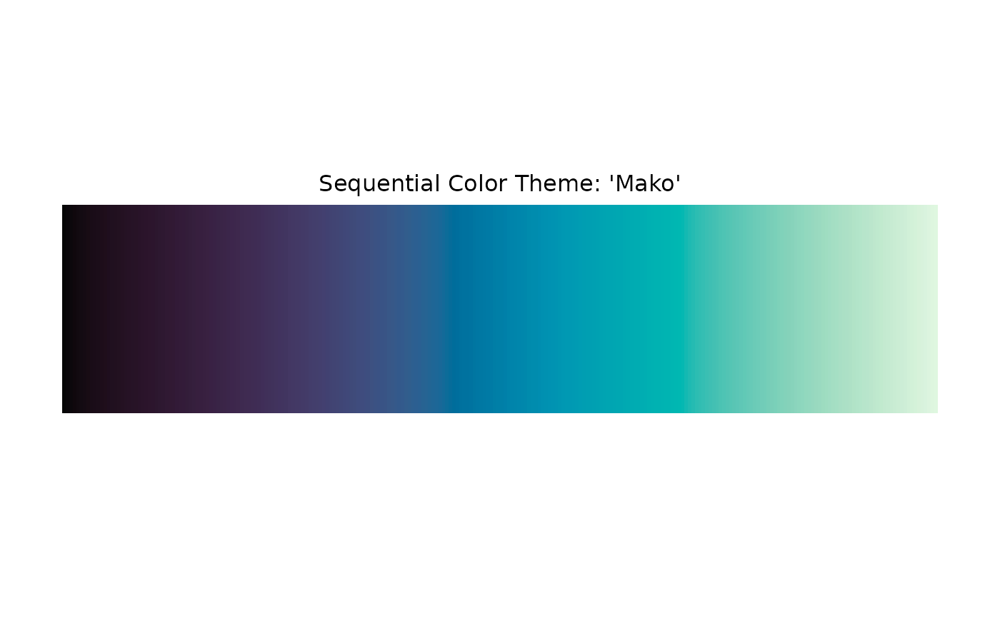

The colortheme() function is the main interface for working with "colortheme" objects.
It acts as a generic dispatcher that can retrieve a pre-defined theme by name, create a new theme from a vector of colors or a color-generating function, and modify an existing "colortheme" object.
Usage
colortheme(object, ...)
# S3 method for class 'colortheme'
colortheme(
object,
kernel.args = NULL,
options = NULL,
name = NULL,
source = NULL,
type = NULL,
reverse = FALSE,
...
)
# S3 method for class 'character'
colortheme(
object,
kernel.args = list(),
options = list(),
name = NULL,
source = NULL,
type = NULL,
reverse = FALSE,
env = NULL,
...
)
# Default S3 method
colortheme(
object,
kernel.args = list(),
options = list(),
name = NULL,
source = NULL,
type = NULL,
reverse = FALSE,
...
)
# S3 method for class 'colortheme'
plot(x, n = NULL, text = x$name, ...)
# S3 method for class 'colortheme'
print(x, display = TRUE, ...)Arguments
- object
a character string to retrieve a pre-defined theme, a color kernel (vector of colors or color-generating function) to create a new theme, or a
"colortheme"object to modify.- ...
optional named arguments used to modify the color theme (overriding corresponding entries in
optionsorkernel.args).- kernel.args
a list of arguments passed to the color kernel.
- options
a list of option values controlling the color theme's behavior.
- name
a character string for the color theme name.
- source
a character string for the source name of the color theme.
- type
a character string specifying the type of the color theme:
"sequential","diverging", or"qualitative".- reverse
logical. If
TRUE, the order of colors is reversed.- env
an environment where color themes are registered.
- x
- n
optional integer specifying the number of colors to display in
plot().- text
optional character string for the title displayed in
plot().- display
logical. If
TRUE(default),print()also plots the color swatch.
Value
colortheme() returns a "colortheme" object containing $palette() and $ramp() functions along with theme metadata.
Details
A "colortheme" object is a list-like structure that provides two primary color-generating functions: $palette() and $ramp().
$palette(n) takes an integer n and returns a character vector of n discrete colors. It is primarily intended for qualitative themes, where distinct colors represent categorical data.
$ramp(x) takes a numeric vector x with values in the [0, 1] interval and returns a character vector of corresponding colors. It maps numeric values onto a continuous color gradient, making it suitable for sequential and diverging themes.
colortheme() dispatches based on the class of object:
If
objectis a character string (e.g.,"Viridis","grDevices/RdBu_r@q?alpha=.5"), it is parsed according to the theme name syntax and loaded from the registry.If
objectis a color kernel (a character vector of colors, a palette function, or a ramp function), a new color theme is constructed.If
objectis already a"colortheme"object, a modified copy is returned with updated settings.
Theme Name Syntax
When retrieving a registered theme by string, you can use a compact URL-like syntax to specify the source and apply on-the-fly modifications:
"[(source)/](name)[_r][@(type)][?(query)]"
source: (optional) the source package or collection (e.g.,"grDevices").name: the name of the theme (e.g.,"RdBu")."_r": (optional) suffix to reverse the color order.type: (optional) desired theme type, matched against"sequential","diverging", or"qualitative"(abbreviations like"s","d","q"or"seq","div","qual"are supported).query: (optional) key-value pairs separated by;or&(e.g.,"?alpha=0.5;na.color='gray50'") to override theme metadata,options, orkernel.args.
Examples
# Retrieve a pre-defined theme
ct <- colortheme("Mako")
print(ct)
#> Sequential Color Theme: 'Mako'
#>
#> Kernel Class: palette
#>
#> Options:
#> kernel.size : Inf
#> reverse.method : "kernel.args$rev <- !kernel.args$rev"
#> palette.formatter: "interpolate"
#> palette.reverse : FALSE
#> ramp.rescaler : c(0, 1)
#> na.color : NA
#>
#> Kernel Arguments:
#> palette: "Mako"
#> alpha : NULL
#> rev : FALSE

ct$palette(5L)
#> [1] "#070707" "#423460" "#007FA8" "#48C2B4" "#E0F7E1"
ct$ramp(seq.int(0, 1, length.out = 5))
#> [1] "#060606" "#42345F" "#007FA7" "#48C2B3" "#DFF7E0"
# Use special syntax to get a reversed, qualitative theme with alpha
ct <- colortheme("grDevices/Zissou 1_r@qual?alpha=0.75")
ct$palette(5L)
#> [1] "#F5191CBF" "#E78F0ABF" "#EACB2BBF" "#7CBA96BF" "#3B99B1BF"
# Create a new theme from a vector of colors
ct <- colortheme(c("#003f5c", "#7a5195", "#ef5675", "#ffa600"))
ct$palette(5L)
#> [1] "#003F5B" "#614D86" "#B85485" "#F46C63" "#FFA500"
# Modify an existing theme
ct <- colortheme(ct, type = "qualitative", reverse = TRUE)
ct$palette(5L)
#> [1] "#ffa600" "#ef5675" "#7a5195" "#003f5c" "#ffa600"